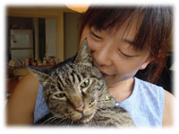
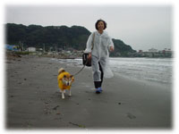

|
自分の奥さんを人に紹介する時、どう呼んだら良いかがわからない。荒木経惟さんのように、「わが愛です」と紹介できたら最高だが、そんなステキなもんじゃない。
うちの場合、家では、しーことか、しーこちゃんと呼んでいるのだが、人前で呼ぶ時に困る。妻、家内、女房、つれあい、かみさん、母さん、母ちゃん、実際、耳にしたことはないが、ワイフ、愚妻、うちの大蔵省など、いろいろあるらしいが、どれもしっくり来ない。結局、納得しているわけではないけれど、僕は、昔から、だいたい「うちのが」でごまかしている。
彼女とは、大学一年の時に知り合った。人間関係学科の同じクラスだったのである。僕らは和光大学の第一期生だった。だから、学生数は少なく、キャンパスは、実にのびのびとしたものだった。
入学して間もなく、今思えば、すでに目を付けていたかも知れない。クラスで自己紹介をした記憶がある。やけに老け込んだ学生が「僕はクラッシックが好きで、音を聴いただけで誰の演奏かがわかるんです」と言ってたのを憶えている。しかし、自分が何を喋ったのか、彼女が何を喋ったかの記憶がない。ただ、赤色のワンピースを着ていたことだけは憶えている。
小田急線鶴川駅に向かうでこぼこ道で、「いつもどこで遊んでるの」と、一見、軟派風に話しかけたのがきっかけだった。ところが「遊んだことない」と言う。服の色が派手なだけだったのだ。話がはずみ、偶然、家が同じ方向だったこともあって、その後、よく、一緒に帰った。
四谷あたりから、御茶ノ水まで、線路沿いの散歩道を歩いて帰ったり、御茶ノ水のレモンで、紅茶を飲んだり、二十数年後に作った『赤色のワンピース』という歌の通りなのである。しかし、しばらくして、まだ、学校に行き始めたばかりなのに、はたから恋人同士のように見られるのは、ちょっと嫌だみたいなことを言われ、それもそうだと僕も思い、保留というか、別行動をとるようになった。
学校は面白かったが、授業はちっとも面白くなかった。ちんぷんかんぷんで、全然、ついて行けなかった。高校の時までは、教科書ガイドがあったので、何とかやれていたのだが、いわゆる勉強をしたことがないから、どうしたものか、さっぱり、わからなかった。
そこで、僕はすぐあきらめ、もっぱらクラブ活動で「和光」という雑誌を作ったり、あとは、学校外で、高校の時の演劇の先生が主宰していたパルチ座という小さな劇団に通ったり、仲間とバンドを組んだり、新宿風月堂に通ったりしていた。
風月堂は、ケーキも置いてあるような、普通の喫茶店なのだが、客層が変わっていた。様々な人がいた。どんな人をも、偏見なく、受け入れていたからだろう。芸術家のような、その卵のような、ヒッピーとか、のちに、フーテンとか。他の場所では、落ち着くことが出来ない人が、唯一、落ち着ける場所であった。
二階建ての大きな喫茶店で、といっても、二階部分はほんの少しで、すべて吹き抜けで天井が高く、道路側は大きなガラス窓があり、うすーくクラッシック音楽が流れていた。たとえば、バッハのチャラチャーンという曲だ。お店の人たちは、みんな、地味な制服を着ていて、特別愛想はなく、かといって、冷たくもなく、決してお客と無駄口をたたくようなこともなく、実に事務的というか、ごくごく普通の喫茶店であった。そこが好きだった。その何でもないところが好きだった。

よく、お客と店側がやけに慣れ慣れしい店があるが、僕はあれが一番苦手で、まず、僕は行かない。お得意様を大事にする店が嫌いなのである。誰をも区別せず、誰をも同じように歓迎する店が好きだ。お客がお客をじろじろ見ない。人を値踏みしない。お客を色眼鏡で見ない。くせを持たない。自己主張しない。得意がらない。うぬぼれない店が僕は好きだ。普通であるということの素晴らしさを、僕は風月堂で教わったような気がする。
大学の友だちの多くは、ジャズ喫茶に通っていた。僕も何度か行ったが、あの暗さと狭っ苦しさと大音量と、むずかしそうな顔つきや、とりつかれたような感じが、どうも馴染めなかった。ジミー・スミスの『キャット』なんか、いまだに耳に残ってはいるが、やはり、何の刺激もないけれど、どうっていうこともないのだけれど、僕は、風月堂ばかりに足が向いていた。入ってすぐの窓際の石のテーブルの席に坐り、外を眺めているのが好きだった。奥の方の暗いところは、好きではなかった。夜より、午前中や昼間の時間帯が好きだった。常に僕は明るいところが好きだった。歌のイメージとは、まったく違うのである。
いつしか、劇団は解散してしまったが、先生から学んだことは大きかった。「若いという心は、後悔しない心だ」とか、「三十歳以上の大人は殺せ」とか。十八歳から二十歳にかけてが、僕の青春時代だった。大学は、すっかり、行かなくなってしまった。二年の時に退学届を出した。彼女とは、いわゆる、デートをしたことはなかったが、時々、連絡はとっていたような気がする。一度、歌を聴きに来てもらったことがある。「ひざ小僧が、良かった」という手紙をもらった。歌のことではなく、半ズボン姿だったからだ。
ある日、どういう話からだったか、結婚の話になり、「どういう人と結婚するの」と訊くと、「私は最初に、プロポーズしてくれた人と結婚する」と言う。僕は驚き、「えっ、じゃ、好きでもない人からプロポーズされたらどうするの」と訊き返すと、「こっちが好きでなきゃ、むこうは、プロポーズするはずがない」と答える。「なら、もし、僕が結婚しようと言ったら、結婚するわけ」と訊くと「うん」と言う。「じゃあ、結婚しようか」となってしまったのである。
それまで、キスをしたことも、手をつないだこともなかった。家の二階で、僕の部屋の隣の客間で、昼間、そんな話をして、結婚の約束をしたのだ。それからというものが早かった。両親に伝えると、父は特に反対もせず、「まあ、悪い女につかまるより、結婚は早い方がいい」と、まだ経済的にどうにもなってないのに、賛成してくれた。とりあえず、親同士の見合いをしようということになった。
その時、父が「結婚式はしたくないと言っているんですけど、それは、まずいですよね」と向こうの親に賛同を求めると、「いや、本人同士がいいというなら、それでいいと思います」と答えられ、うちの父親も納得してしまったのである。
あとで知ったことだが、父親は、むこうが反対していると思っていたらしいのだ。なのに、いとも簡単に賛成されたもんだから、こりゃ、変だ、きっと、おかしな家のおかしな娘なんだと、近所の評判などを聞きにまわったらしい。
どちらも、二十歳だった。彼女も学校を辞めた。結婚式も新婚旅行もしなかった。そのかわり、父親に、代田橋に小さな家を買ってもらった。土地の形が三角形の、トタン塀の玄関の脇には、こわれた井戸があるような、本当に小さなボロ家だった。風呂はなく、近所のお風呂屋に通った。働きがないので、電話はとまり、ご飯のおかずは、キャベツと魚肉ソーセージだったり、でも、美味しかった。楽しかった。そこで、『堕天使ロック』や『サルビアの花』が生まれた。

長女が生まれ、次女が生まれてから、代々木八幡に引っ越した。グループは解散、僕は、事務所に残り、製作の仕事をしていた。のちに、才能のなさに気づいたというか、居心地が悪くなってきて、会社をやめた。初台の本屋に勤めた。休みの日は、子どもを連れ、よく鎌倉に遊びに行った。
二年後、武蔵新城という町で本屋をやることになった。一時期、よく、川崎に遊びに行った。うちのは、全然、やきもちをやかず、いつも、いってらっしゃいという感じであった。気に入った子がいて、何かプレゼントしたいと言ったら、下着を買ってきてくれた。変な話である。
結婚してから、これまでに、何回か恋愛をしてきたが、一度も、もめたことはなかった。嫉妬は、あるのだろうけれど、どうぞという感じであった。ただ、子どもを作るということは嫌らしかった。どんなに遊んでも、どんなに本気になってもいいけれど、それだけは駄目らしい。これまでに、僕らは一度も喧嘩をしたことがない。穏やかなわけではない。怒るのは、僕ひとりだけなのだ。
ふと、思う。もしも、離婚をして、別な人と結婚していたら、どうだったろうかと。さぞかし、波瀾万丈の人生を送ることになっただろうなと想像する。その方が、もしかしたら、楽しかったかもしれない。しかし、その分、いや、それ以上に、苦しみとか悲しみも多いだろうなと思う。
僕は、いやらしくて、ちょっとお頭が弱そうな、舌ったらずの、肉感的な女性が好きなのだが、どういうわけか、縁がなく、あっさりタイプになってしまった。生活するなら、というふうに選んでしまったせいかも知れない。ただ、趣味が違う。温泉も旅行も好きじゃない女なのだ。困ってしまう。だから、いまだに、僕は、恋をしたくなるのである。
|